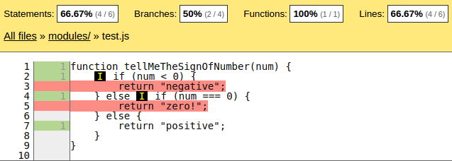

Javascript Unit Testing
Topics
- Unit Tests Introduction
- Assertions
- Frameworks and Environment
- Coverage
- Karma
- Real World Example
Unit Tests Introduction
What is it?
At a high-level, unit testing refers to the practice of testing certain functions and areas – or units – of our code. This gives us the ability to verify that our functions work as expected. That is to say that for any function and given a set of inputs, we can determine if the function is returning the proper values and will gracefully handle failures during the course of execution should invalid input be provided.
What?
Look at your code
as at the set of
UNITS
Each UNIT has its
INPUTS
and OUTPUTS
So what are we testing?
- We know that certain inputs should produce certain outputs
- Unit tests should test the ability of producing right outputs given different inputs
For Example
function factorial(num) {
var result;
result = 1;
for (var i = 2; i <= num; i++) {
result *= i;
}
return result;
}
input 0 should produce output 1
input 1 should produce output 1
input 3 should produce output 6
negative input should produce output ?
Why Unit Tests?
Because we like spending a lot of time and fail a deadline
not!
Because it helps us to identify failures in algorithms and logic
Because it helps us to improve the quality of code
Because it makes us to write a code that is easy to test
Because it prevents future changes from breaking functionality
Because it help us to have more predictable deadlines and estimations
Easy to Test → Easy to Read → Less error-prone
yes!
Let's see an example
Consider this page:
Example of Javascript Code
$(".example-form .submit").click(function (ev) {
var number, name, date, time, result, text, operation;
ev.preventDefault();
ev.stopPropagation();
name = $("[name=name]").val();
number = parseInt($("[name=number").val(), 10);
date = new Date();
time = date.getHours() + ":" + date.getMinutes() + ":" + date.getSeconds();;
operation = $("[name=operation]:checked").val();
if (operation === "factorial") {
result = 1;
for (var i = 2; i <= number; i++) {
result *= i;
}
} else {
result = number * number;
}
text = "Hello " + name + "! " + "Now is " + time + ". The result of your operation is " + result;
$("#example-result .result").html(text);
});
Let's try to test it!
For example correct name input
describe("clickHandler", function () {
it("should read correctly a name", function () {
$("[name=name]").val("Bob");
$("[name=number").val(1);
//There's no other way to test the correctness of the name
expect($("#example-result .result").html().indexOf("Bob")).to.equal(6);
});
});
What else do we need to test
Different results for factorial for different inputs
Different results for square for different inputs
Different result for the name (and if there's no name?)
Correct data parsing
... Are we sure we do not forget anything?
No, we're not...
Consider splitting a function into simple ones
They are really easier to test
/**
* Returns a name introduced into input
*
* @returns {string}
*/
function getName() {
return $(".example-form [name=name]").val();
}
describe("getName", function () {
it("should be empty " +
"when no name is introduced", function () {
expect(getName()).to.be.empty;
});
it("should correctly return" +
" the introduced name", function () {
$(".example-form [name=name]").val("Bob");
expect(getName()).to.equal("Bob");
});
});
Consider splitting a function into simple ones
/**
* Returns a number introduced into input
*
* @returns {number}
*/
function getNumber() {
return parseInt($(".example-form [name=number]").val() || 0, 10);
}
describe("getNumber", function () {
it("should return 0 " +
"when no number is introduced", function () {
expect(getNumber()).to.equal(0);
});
it("should return 0 " +
"when string is introduced", function () {
$(".example-form [name=number]").val("String");
expect(getNumber()).to.equal(0);
});
it("should return an introduced number ", function () {
$(".example-form [name=number]").val("59");
expect(getNumber()).to.equal(59);
});
});
Consider splitting a function into simple ones
/**
* Returns a checked operation
*
* @returns {string}
*/
function getOperation() {
return $(".example-form [name=operation]:checked").val();
}
describe("getOperation", function () {
it("should return factorial", function () {
$(".example-form [name=operation][value=factorial]").prop("checked", true);
expect(getOperation()).to.equal("factorial");
});
it("should return square", function () {
$(".example-form [name=operation][value=square]").prop("checked", true);
expect(getOperation()).to.equal("square");
});
});
Consider splitting a function into simple ones
/**
* Calculates a factorial of a given number
*
* @param {number} number
* @returns {number}
*/
function factorial(number) {
if (number === 0 || number === 1) {
return 1;
}
return number * factorial(number - 1);
}
describe("factorial", function () {
it("should return 1 when number is 0 or 1", function () {
expect(factorial(0)).to.equal(1);
expect(factorial(1)).to.equal(1);
});
it("should return correct value for other number", function () {
expect(factorial(3)).to.equal(6);
expect(factorial(5)).to.equal(120);
});
});
Consider splitting a function into simple ones
/**
* Calculates a square of a given number
*
* @param {number} number
* @returns {number}
*/
function square(number) {
return number * number;
}
describe("square", function () {
it("should return 0 for 0", function () {
expect(square(0)).to.equal(0);
});
it("should return positive number for negative one", function () {
expect(square(-3)).to.equal(9);
});
it("should return correct values", function () {
expect(square(3)).to.equal(9);
expect(square(25)).to.equal(625);
});
});
Consider splitting a function into simple ones
/**
* Returns a current time in a form hh:mm:ss
*
* @returns {string}
*/
function getTimeString() {
var d;
d = new Date();
return d.getHours() + ":" + d.getMinutes() + ":" + d.getSeconds();
}
describe("getTimeString", function () {
it("should have a length of 8", function () {
expect(getTimeString()).to.have.length(8);
});
it("should have a specific format", function () {
expect(/[0-9][0-9]:[0-9][0-9]:[0-9][0-9]/.test(getTimeString()))
.to.be.true;
});
});
Be kind and polite to your code :P
/**
* Creates a text based on the name, time and the result of operation
*
* @param {string} name
* @param {string} time
* @param {number} result
* @returns {string}
*/
function pleaseCreateFullText(name, time, result) {
return "Hello " + name + "! " + "Now is " + time + ". The result of your operation is " + result;
}
describe("pleaseCreateFullText", function () {
it("should return an expected text", function () {
expect(pleaseCreateFullText("Bob", "17:59:00", "260"))
.to.be.equal("Hello Bob! Now is 17:59:00. The result of your operation is 260");
});
});
Our final code
/**
* handler for the submit form
*/
$(".example-form1 .submit").click(function (ev) {
var number, name, time, result, text;
ev.preventDefault();
ev.stopPropagation();
name = getName();
number = getNumber();
time = getTimeString();
result = getOperation() === "factorial" ? factorial(number) : square(number);
text = pleaseCreateFullText(name, time, result);
$("#example-result .result").html(text);
});
Thus we just test each small function
What do we gain
Code easy to read ♥
Code easy to write ♥
Code easy to maintain ♥
Code easy to test ♥
Our life becomes lot easier! ♥ ♥ ♥
Actually it saves our time!
Assertions
Assertion is just a predicate (true/false statement), indicating that we think that this predicate is always true. If it's evaluated to false something happened and the test fails.
Example of an assertion function
Actually we can write assertion function at our own
function assert(predicate) {
if (predicate) {
return true;
} else {
throw("Assertion failed");
}
}
//
var x = 2;
assert(x > 2); // Uncaught Assertion failed
assert(x < 3); // true
Example of an assertion function
We can improve it passing a description to it
function assert(predicate, description) {
if (predicate) {
return description + " passed!";
} else {
throw(description + " failed");
}
}
//
var x = 2;
assert(x > 2, "x should be more than 2");
// Uncaught x should be more than 2 failed
assert(x < 3, "x should be more less than 3");
// "x should be more less than 3 passed!"
We can write our assertion library and use it for our tests!
Providing an interface to methods like
assertTrue(predicate, description);
assertFalse(predicate, description);
assertEquals(predicate, description);
...
But we won't do that.
There are plenty of frameworks which are already doing this
Frameworks and Environment
- Testing frameworks
- Assertion libraries
- Test Environment / Test runners
Testing Frameworks
Provide an interface for building your test suite.
describe, it, beforeEach...
Examples of such frameworks:
Assertion Libraries
Provide an interface for different assertions methods
expect, should, assert...
Examples of such libraries:
Testing Environment/Test Runners
Provide an interface for easy setup and running tests
Examples of such libraries:
How to choose a framework
Simplicity VS Flexibility
For simplicity choose Jasmine, write your tests and then just open a file SpecRunner.html in a browser
For flexibility use Karma test runner with mocha testing framework with whatever assertion library you like (e.g. chaijs)
Also take a look at this article Jasmin VS Mocha
Coverage
Consider the following code:
function tellMeTheSignOfNumber(num) {
if (num < 0) {
return "negative";
} else if (num === 0) {
return "zero!";
} else {
return "positive";
}
}
And consider the following assertions:
expect(tellMeTheSignOfNumber(1))
.to.equal("positive");
? What percentage of our code is covered by test ?
Coverage
Our Code
function tellMeTheSignOfNumber(num) {
if (num < 0) {
return "negative";
} else if (num === 0) {
return "zero!";
} else {
return "positive";
}
}
// Assertion
expect(tellMeTheSignOfNumber(1))
.to.equal("positive");
Coverage Percentage
Accordingly to Karma Coverage plugin Based on Istanbul code coverage tool.
Basic Types of Coverage
- Function Coverage
- Statement Coverage
- Branch Coverage
Karma
The main goal for Karma is to bring a productive testing environment to developers. The environment being one where they don't have to set up loads of configurations, but rather a place where developers can just write the code and get instant feedback from their tests. Because getting quick feedback is what makes you productive and creative.
Karma
Karma Config File
module.exports = function (config) {
config.set({
// base path, that will be used to resolve files and exclude
basePath: "../",
// list of frameworks which will be used
frameworks: ["jasmine", "requirejs"],
// list of files / patterns to load in the browser
files: [
{pattern: "modules/*.js"},
{pattern: "test/specs/*.js"}
],
// Start these browsers, currently available:
// - Chrome
// - ChromeCanary
// - Firefox
// - Opera
// - Safari
// - PhantomJS
browsers: ["PhantomJS"]
});
};
Full version of the karma config file for masbuilder can be found here
Let's Write and Run Some Tests!
Open the file helpers.js
Open the test file helpers.js
Let's write the test for domlist_to_array function
Testing domlist_to_array
it('domlist_to_array', function () {
var arr;
arr = [1,2,3];
expect(domlist_to_array(arr)).toEqual(arr);
});
Let's increase branch coverage of the method indexOf
it("should throw an error if the array is null or undefined", function () {
expect(function () {indexOf(null, "")}).toThrow();
expect(function () {indexOf(undefined, "")}).toThrow();
expect(function () {indexOf(void 0, "")}).toThrow();
});
it("should return -1 for the empty array", function () {
expect(indexOf([], "hello")).toEqual(-1);
});
Let's try to take this else path.
What Else Can we Do?
Asynchronous Testing
it("should process server's data correctly", function (done) {
ajax.get(url, {}).then(function (data) {
expect(processData(data)).toEqual("Expected Value Here");
done();
}).done();
});
What Else Can we Do?
Mocking Timeout Functions
With Jasmine:
beforeEach(function () {
jasmine.clock().install();
});
afterEach(function () {
jasmine.clock().uninstall();
});
it("calls timeout", function () {
setTimeout(function() {
timerCallback();
}, 100);
expect(timerCallback).not.toHaveBeenCalled();
jasmine.clock().tick(101);
expect(timerCallback).toHaveBeenCalled();
});
What Else Can we Do?
Mocking Timeout Functions
With Sinon (supported by chaijs and karma):
beforeEach(function () {
this.clock = sinon.useFakeTimers();
});
afterEach(function () {
this.clock.restore();
});
it("calls timeout", function () {
setTimeout(function() {
timerCallback();
}, 100);
expect(timerCallback).not.toHaveBeenCalled();
this.clock().tick(101);
expect(timerCallback).toHaveBeenCalled();
});
What Else Can we Do?
Mocking Server!
With Sinon (supported by chaijs and karma):
beforeEach(function () {
this.server = sinon.fakeServer.create();
this.server.respondWith(
"GET",
/subaccount/,
[200, {"Content-Type": "application/json"}, [{"id":1, name: "Bob"}]]
);
});
afterEach(function () {
this.server.restore();
});
it("renders correctly server data", function (done) {
myLib.getSubaccounts(function (data) {
myLib.renderSubaccounts(data);
expect($(".subaccountsList")).to.exist;
done();
}).done();
});
Our Goal
Coverage 80%
at least!
Have fun!